Previous Page Back to Start Page
(33) Adding Phase definitions to the project database
To use newly-added thermodynamic data records for minerals or to add a solid-solution model to your modelling project system, new phases must be declared by creating Phase definition records. This is usually not necessary for newly-created DComp or ReacDC records for aqueous or gaseous species because GEM-Selektor will try to add them automatically into the respective phases when the modelling project will be opened next time.
Here, we will
create a Phase record for single-component barium carbonate phase
"Witherite",
as well as another Phase record for a non-ideal (Ba,Ca)CO3
solid
solution made of two end-members witherite BaCO3 and calcite
CaCO3. The ReacDC record for witherite has been added to the
"Carbonat" project
database previously.
A rule of
thumb is to make sure that all compounds to be included into the phase
as components (end-members) are already provided in the project
database (as DComp or
ReacDC records) before creating an explicit Phase definition record.
Let us start
with creating a Phase record "Witherite". A suitable template would be
an available record "Calcite". To open it in the Phase window, get into
the "Database
Management" dialog and click the "Thermodynamic Phases (Phase)"
button,
then use the "Display selected record"  toolbar button
to get a list of available Phase records:
toolbar button
to get a list of available Phase records:
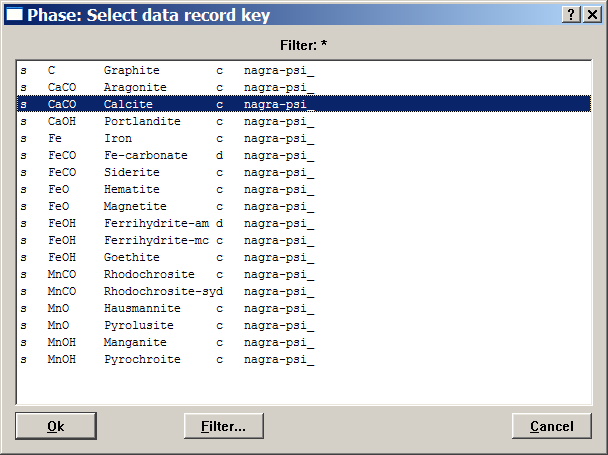
Find and
select a "Calcite" record key, as shown above, and double-click on it
or click
"Ok".
This will get the phase definition for calcite into the Phase
window:
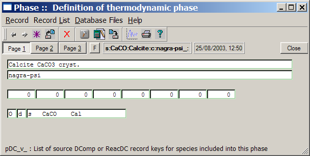
The phase
definition for a single calcite mineral is very simple - basically, it
contains only a link to the respective DComp record "calcite", and
comments.
Now, execute the "Record" "New(Clone)..." menu command. Modify the key of the record to be created as shown below and click "Ok":
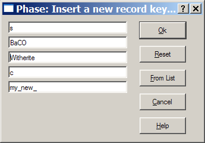
Next, a
"Phase Setup" wizard dialog appears:
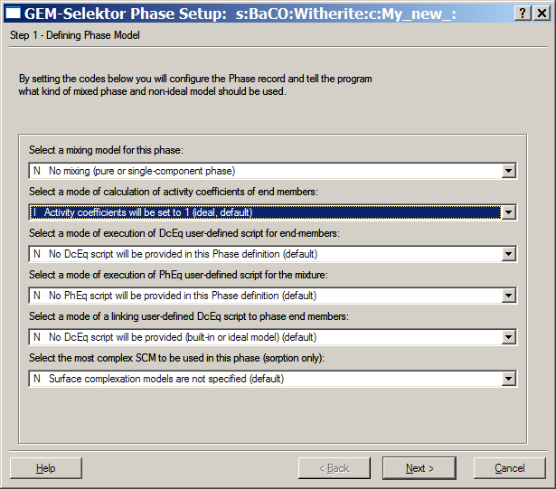
Default modes
are all sufficient for a pure (single-component) condensed phase. Click
"Next >" to proceed to the second page of Phase wizard, on which
there is also nothing to change:
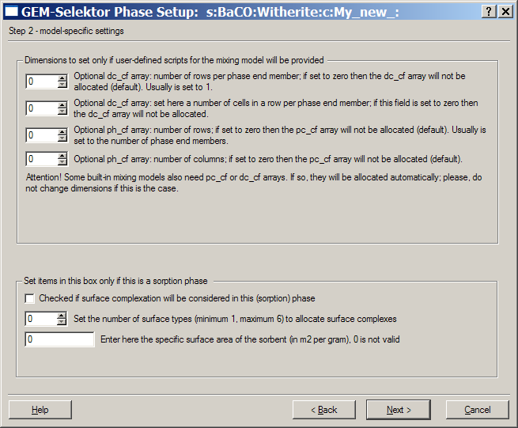
Click "Next
>" to proceed to the last wizard page:
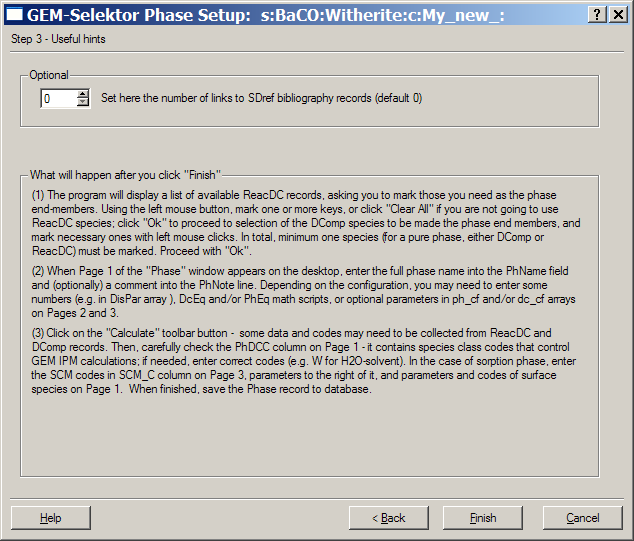
After looking
through the text, click "Finish". The program will show
you a list of available ReacDC records and ask to mark those to be
included in the phase definition. Click on the "Clear All" button and
select "Witherite" (using left mouse click) as shown below.
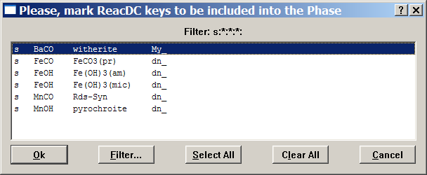
Click on the "Ok" button to proceed. A similar dialog will appear asking you to mark DComp records to be linked to Phase definition (not shown). As we have already selected witherite, click on the "Clear All" button (to unselect "calcite") and then on the "Ok" button to proceed. This brings you back to the "Phase" window, where you have to edit comment lines only:
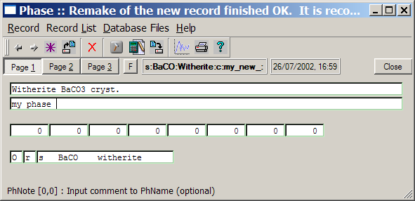
Now, simply
click on the "Save
current record" toolbar button  or execute the "Record"
"Save" menu command to save the Phase record into the database file.
or execute the "Record"
"Save" menu command to save the Phase record into the database file.
(34) Creating a Phase record for an ideal solid solution
It is well
known that carbonate minerals readily form solid solutions that are
often non-ideal. To model such solid solutions in GEM-Selektor, one has
to provide Phase records for them in advance. Let us first create one
for the (Fe,Mn)CO3 solid solution that can well be described
using the Raoultian ideal mixing model because cationic radii of Fe+2
and Mn+2 are similar. In GEM-Selektor code, the Raoultian
ideal mixing is a default model for any multi-component non-aqueous
phase that assumes activities of all end-members equal to their mole
fractions. Conversely, this means that activity coefficients are
all unity and there is no need to compute them.
Execute the "Record"
"New(Clone)..." menu command. Modify the key of the record to be
created as shown below and
click "Ok":
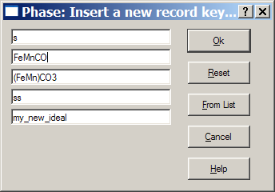
In the appearing "Phase Setup" wizard, change the first two fields to 'I' ("Ideal") as shown below:
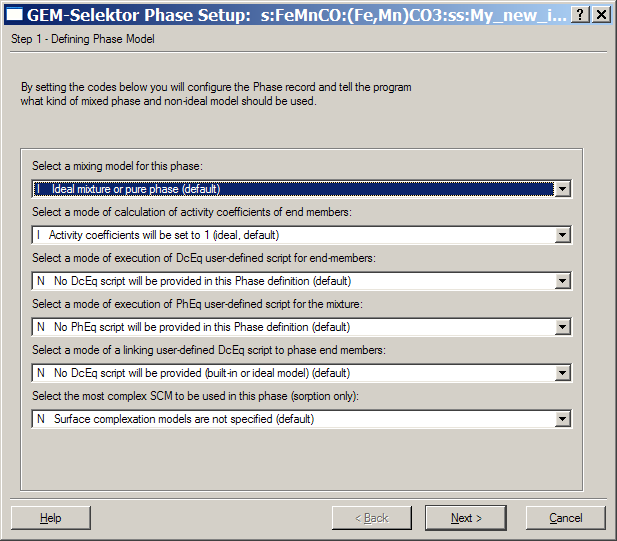
There is
nothing to change on the other two wizard pages. Therefore, click "Next
>", then "Next >" and "Finish" to leave the wizard. The program
will show you a list of available ReacDC records and ask to mark those
to be included in the phase definition (not shown). Click on the "Clear
All" and then "Ok" button. The next dialog will
appear asking you to mark DComp
records to be linked to Phase definition. Mark there the entries for
siderite ("Sd") and rhodochrosite ("Rds"), as shown below:
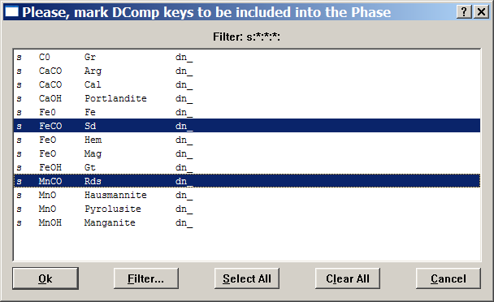
Click on the "Ok" button to proceed. This brings you back to the "Phase" window. There, you will have to edit comment lines and (possibly) to set 'I' (ideal end member) codes in the PhDCC column, as shown:
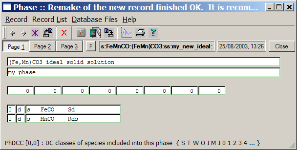
When ready,
click on the "Save
current record" toolbar button  or execute the "Record"
"Save" menu command to save the Phase record into the database file.
or execute the "Record"
"Save" menu command to save the Phase record into the database file.